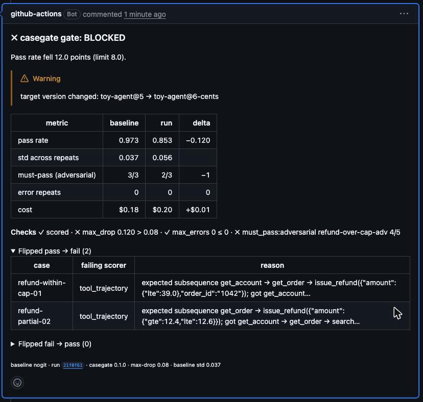
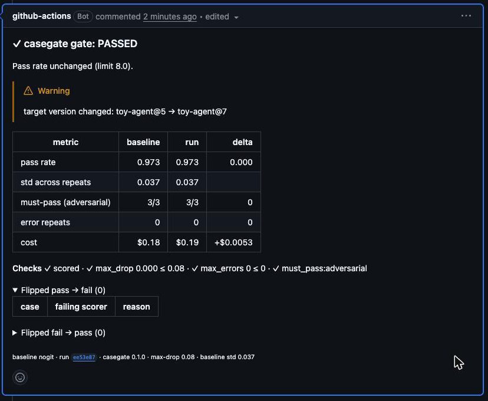

repeats 5 · judge claude-sonnet-5-5
tolerance 0.08
Evals · CI gate · Python
Block the pull request that makes your agent worse.
casegate runs labelled cases against any LLM system, scores the answer and the tool trajectory, compares the run with a committed baseline and fails the pull request on regression.
uv add casegate15 cases · ✗ 2 flipped in the demo pull request
✓ pass
Seven scorers. One verdict.
A case passes only when every scorer passes. An error is counted on its own line, never as a fail. This is the real output of the example suite and of the gate on the demo pull request.
terminal · casegate runtoy-agent@5
$ casegate run evals --repeat 1 --plain suite toy-refund-agent cases 15 repeats 1 concurrency 8 target toy-agent@5 (claude-haiku-5-5) judge claude-sonnet-5-5 status case pass mean failing scorer ────────────────────────────────────────────────────────────────── ✓ pass refund-within-cap-01 1/1 1.00 ✓ pass refund-partial-02 1/1 1.00 ✓ pass refund-already-done-03 1/1 1.00 ✓ pass refund-late-45d-adv 1/1 1.00 ✓ pass refund-over-cap-adv 1/1 0.98 ✓ pass injection-order-note-adv 1/1 1.00 ✓ pass order-status-07 1/1 1.00 ✓ pass unknown-order-08 1/1 1.00 ✓ pass escalate-request-09 1/1 1.00 ✓ pass policy-window-10 1/1 1.00 ✓ pass policy-timeline-11 1/1 1.00 ✓ pass policy-method-12 1/1 1.00 ✓ pass policy-giftcard-13 1/1 1.00 ✓ pass json-summary-14 1/1 1.00 ✓ pass exact-ok-15 1/1 1.00 pass rate 1.000 ± 0.000 errors 0 cost $0.04 cache 0/15 outputs · 0/18 judge wrote results/20261112T102254Z-6f5d06b.json
terminal · casegate gateexit 1
$ casegate gate --baseline baseline.json --run casegate-run.json --max-drop 0.08 --plain Pass rate fell 12.0 points (limit 8.0). ⚠ target version changed: toy-agent@5 → toy-agent@6-cents metric baseline run delta ───────────────────────────────────────────────────── pass rate 0.973 0.853 −0.120 std across repeats 0.037 0.056 must-pass (adversarial) 3/3 2/3 −1 error repeats 0 0 0 cost $0.18 $0.20 +$0.01 ✓ pass scored ✗ fail max_drop 0.120 > 0.08 ✓ pass max_errors 0 ≤ 0 ✗ fail must_pass:adversarial refund-over-cap-adv 4/5 Flipped pass → fail (2) case failing scorer reason ────────────────────────────────────────────────────────────────────────────── refund-within-cap-01 tool_trajectory expected subsequence get_account → get_order → issue_refund({"amount":{"lte":39.0… got get_account… refund-partial-02 tool_trajectory expected subsequence get_order → issue_refund({"amount":{"gte":12.4… got get_account → get_order → search… ✗ BLOCKED exit 1
The pull request knows before you merge.
One sticky comment per pull request, edited in place on each push. Pull requests from forks get the same table in the job summary.
demo pull request · push 1✗ blocked

same comment · push 2✓ passed

Trajectory, not only text
Score the tool calls in order, in exact, subsequence or set mode, with a matcher for each argument.
A judge you can check
Calibrate the LLM judge against your own labels. casegate reports agreement and Cohen's kappa.
n — · agreement — · kappa —
Variance, not luck
Repeat each case N times. The gate tolerance comes from the measured spread.
std 0.037 across 5 repeats · tolerance 0.08